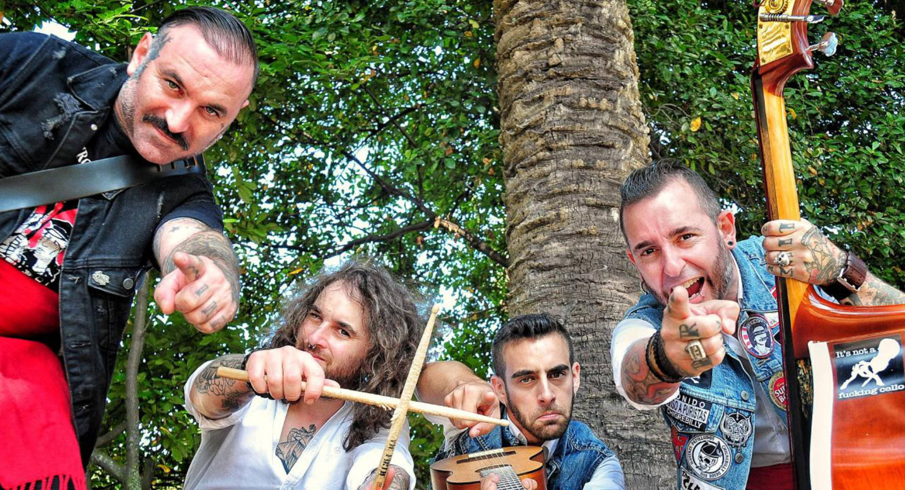

ILUSTRES
PATILLUDOS
EPK
Electronic Press Kit
Los Reyes del Chigrebilly · Xixón · desde 2011
Press kit
Ilustres Patilludos
Los auténticos y genuinos reyes del Chigrebilly. Desde Gijón y desde 2011, mezclan rock and roll, música tradicional asturiana y canción de chigre en un género propio: sonido compacto, directo y una fiesta asegurada sobre el escenario.

- OrigenGijón / Xixón, Asturias
- En activo desde2011
- GéneroChigrebilly (rockabilly + folk asturiano + celtic punk)
- Formación6 músicos: voz/acústica, mandolina-banjo, bajo, violín, eléctrica, batería
- PremiosNominados AMAS: Mejor Directo 2018 · Mejor Videoclip 2020
«Sonido no apto a puristas.» Chigrebilly con un pie en Nashville, otro en Dublín y los dos plantados en un llagar asturiano.
Material
Música y vídeos
Discografía

Chigrebilly
LP · 2017

Espicha o muerre / Chalaneru
Singles · 2019
Videoclips oficiales
▶Sidra en el llagaryoutu.be/PCQ0moQJkFk
▶Borracho, Jodido y Tatuadoyoutu.be/GSngH6CLJ7I
▶Espicha o Muerre (con Xune Elipe)youtu.be/8XyXyWSQyDE
▶Chigrebillyyoutu.be/4cGYRP_Lvlk
Enlaces y redes
- SpotifyIlustres Patilludos
- Apple MusicIlustres Patilludos
- YouTubeIlustres Patilludos
- Instagram@ilustrespatilludos
- Facebooklos.ilustres.patilludos
- X / Twitter@ipatilludos